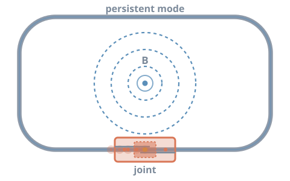
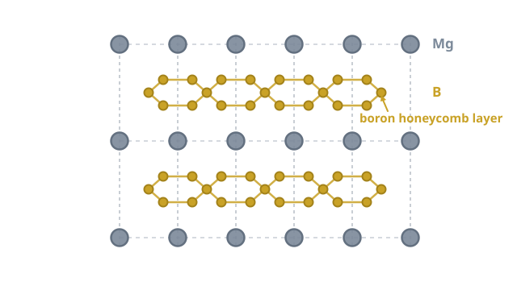

Closing the loop: MgB₂ superconducting joints for MRI¶

An MRI scanner holds an extremely stable magnetic field for years, with its power supply switched off. That trick depends on a few tiny connections inside the magnet: the superconducting joints. My PhD focused on making those joints from a promising superconductor, magnesium diboride.
How an MRI magnet stays on¶
Most clinical MRI magnets are wound from niobium–titanium (Nb–Ti) wire and cooled in liquid helium to about 4.2 K.1 Once the coil is energised, the circuit is closed with a superconducting switch. The power supply is then disconnected. Current keeps circulating with no driving voltage. This is called persistent mode.
The field is only as stable as the loop is perfect. Any residual resistance R in the circuit makes the current decay with a time constant
where L is the coil inductance.2 MRI needs field drift measured in parts per million over long periods. So the total resistance must be vanishingly small.1

The wire itself is superconducting. The weak points are the joints, where separate lengths of wire must be connected. A large magnet contains many coil sections, a persistent switch and leads, so it needs several joints. Every one must be superconducting.2
Why magnesium diboride?¶
In 2001, Nagamatsu and colleagues discovered that MgB2, a simple and inexpensive compound, superconducts at 39 K.3

| Nb–Ti | MgB2 | |
|---|---|---|
| Critical temperature | about 9 K | 39 K |
| Typical operating temperature in MRI | 4.2 K (liquid helium bath) | about 10 to 20 K (cryocooler) |
| Raw materials | Niobium, titanium | Magnesium, boron (abundant, low cost) |
| Mechanical behaviour | Ductile alloy | Brittle ceramic-like compound |
Sources: Larbalestier et al.,4 Buzea and Yamashita,5 and Parizh et al.6
This higher Tc matters for MRI. MgB2 magnets can run cooled by cryocoolers, without a large liquid helium bath.6 Helium is a finite and increasingly costly resource, so reducing dependence on it is attractive. Some designs go further and use a frozen solid cryogen as a thermal buffer, keeping the magnet cold through power cuts.7
How MgB₂ wire is made¶
MgB2 is too brittle to draw on its own. Instead, manufacturers use the powder-in-tube (PIT) method: powder is sealed inside a metal tube and the whole composite is drawn into wire.8
- Powder preparation. In the in situ route, magnesium and boron powders are mixed (Mg + 2B). In the ex situ route, ready-made MgB2 powder is used.8
- Tube filling. The powder is packed into a metal tube. A barrier layer, often niobium or iron, stops magnesium reacting with the outer sheath.
- Drawing and rolling. The tube is reduced through dies and grooved rolls.
- Restacking. Several mono-filament wires are bundled into a new tube to make a multifilament conductor.
- Final drawing. The composite is drawn to its final diameter.
- Reaction heat treatment. In the in situ route, heating under argon converts Mg + 2B into MgB2 inside the wire.
- Coil winding. The wire is wound into coils, either before the reaction ("wind and react") or after it ("react and wind").9
- Joints and magnet assembly. Coils, switch and leads are joined into one superconducting circuit.
The in situ reaction shrinks in volume, leaving pores that block current. To get denser superconductor, internal magnesium infiltration places a magnesium rod at the centre of a boron layer. On heating, the magnesium infiltrates the boron and forms a dense MgB2 layer.10
Who makes MgB₂ conductors?¶
A small number of companies produce MgB2 wire commercially. ASG Superconductors in Genoa, Italy, makes long-length PIT wire. It has built a 0.5 T, cryogen-free open MRI scanner wound with MgB2.1112 In the United States, Hyper Tech Research develops wire made by internal magnesium infiltration.10
ASG Superconductors: developing MgB2 wire, from powder synthesis to the final stage.
Inside ASG Superconductors' MgB2 wire production facility.
Why MgB₂ joints are hard¶
Joining MgB2 is much harder than joining Nb–Ti, for several reasons:65
- It is brittle. MgB2 cannot be welded or crimped like a ductile metal.
- Magnesium is reactive and volatile. Forming dense, well-connected MgB2 at the joint, rather than in a controlled wire, is difficult.
- The wire is a composite. Filaments sit inside metal sheaths and barriers. These must be opened and the superconducting cores connected without damaging them.
- Grain connectivity is critical. Current must pass through continuous, well-connected grains. Porosity and impurity phases block it.
Researchers have pursued several strategies, and joints with very low resistance have been reported.13 Joints made from already reacted wire are especially challenging. The superconductor has formed before joining, so the joint must create a new superconducting path between two finished conductors.
How a joint is judged¶
The decisive test is the transport critical current, Ic. A current is passed through the joint at a set temperature and magnetic field. Ic is the current at which resistance first appears. A good joint carries a current comparable to the wire itself, under the conditions the magnet will see. Long-term persistent-mode tests then measure any slow field decay directly.
My work¶
During my PhD at The University of Queensland, I developed a method for joining reacted MgB2 for persistent-mode MRI magnets. The aim was ultra-low joint resistance for stable circulating current and long-term field stability. The work combined synthesis, heat treatment, microscopy and low-temperature transport measurements.
Industry funded · IP protected
This project is industry funded, and its methods are under intellectual-property protection. Details and publications will follow once patent clearance allows.
References¶
-
Lvovsky, Y., Stautner, E. W., & Zhang, T. (2013). Novel technologies and configurations of superconducting magnets for MRI. Superconductor Science and Technology, 26, 093001. doi:10.1088/0953-2048/26/9/093001 ↩↩
-
Iwasa, Y. (2009). Case Studies in Superconducting Magnets: Design and Operational Issues (2nd ed.). Springer. doi:10.1007/b112047 ↩↩
-
Nagamatsu, J., Nakagawa, N., Muranaka, T., Zenitani, Y., & Akimitsu, J. (2001). Superconductivity at 39 K in magnesium diboride. Nature, 410, 63–64. doi:10.1038/35065039 ↩
-
Larbalestier, D., Gurevich, A., Feldmann, D. M., & Polyanskii, A. (2001). High-Tc superconducting materials for electric power applications. Nature, 414, 368–377. doi:10.1038/35104654 ↩
-
Buzea, C., & Yamashita, T. (2001). Review of the superconducting properties of MgB2. Superconductor Science and Technology, 14, R115–R146. doi:10.1088/0953-2048/14/11/201 ↩↩
-
Parizh, M., Lvovsky, Y., & Sumption, M. (2017). Conductors for commercial MRI magnets beyond NbTi: Requirements and challenges. Superconductor Science and Technology, 30, 014007. doi:10.1088/0953-2048/30/1/014007 ↩↩↩
-
Patel, D., Hossain, M. S. A., Qiu, W., Jie, H., Yamauchi, Y., Maeda, M., et al. (2017). Solid cryogen: A cooling system for future MgB2 MRI magnet. Scientific Reports, 7, 43444. doi:10.1038/srep43444 ↩
-
Kumakura, H., Matsumoto, A., Fujii, H., Kitaguchi, H., & Togano, K. (2002). Microstructure and superconducting properties of powder-in-tube processed MgB2 tapes. Physica C: Superconductivity, 382, 93–97. doi:10.1016/S0921-4534(02)01204-2 ↩↩
-
Musenich, R., Fabbricatore, P., Farinon, S., Greco, M., Modica, M., Marabotto, R., et al. (2006). The behaviour of cryogen-free MgB2 react and wind coils. Superconductor Science and Technology, 19, S126–S131. doi:10.1088/0953-2048/19/3/018 ↩
-
Li, G. Z., Sumption, M. D., & Collings, E. W. (2015). Kinetic analysis of MgB2 layer formation in advanced internal magnesium infiltration (AIMI) processed MgB2 wires. Acta Materialia, 96, 66–71. doi:10.1016/j.actamat.2015.06.013 ↩↩
-
Modica, M., Angius, S., Bertora, L., Damiani, D., Marabotto, M., Nardelli, D., et al. (2007). Design, construction and tests of MgB2 coils for the development of a cryogen free magnet. IEEE Transactions on Applied Superconductivity, 17, 2196–2199. doi:10.1109/TASC.2007.898107 ↩
-
Columbus Superconductors (ASG Superconductors). Magnets for medical applications: MROpen. columbussuperconductors.com ↩
-
Patel, D., Matsumoto, A., Kumakura, H., Nishijima, G., Maeda, M., Kim, S.-H., Choi, S., & Kim, J. H. (2020). Tailored joint fabrication process derived ultra-low resistance MgB2 superconducting joint. Scripta Materialia, 178, 198–202. doi:10.1016/j.scriptamat.2019.11.020 ↩